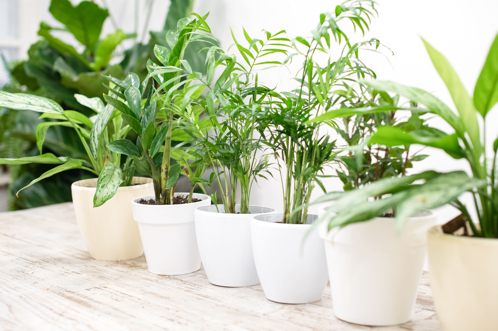

We'd be happy to share our expertise and explore potential solutions to address your
inquiries.
LET'S EMBARK ON YOUR DREAM PROJECT
Houseplants Guide: Giving Them The Love They Need
O VERCARDO VERCARDO VERCARDO
Indulge in Nature's Elegance: Elevate Your Space with Exquisite Houseplants

In a world brimming with technological marvels, there remains an innate longing within us for the simplicity and serenity of nature. Amidst the frenetic pace of digital existence and ceaseless schedules, the deliberate act of nurturing plants emerges as a soothing antidote. With an increasing number of individuals embracing remote work, the hours and days may slip by without ever stepping foot outside. Yet, within the confines of our homes, carefully chosen houseplants offer a sanctuary of tranquility, bestowing upon us a plethora of benefits that extend far beyond mere aesthetics.
At Vercado, we understand the profound impact that well-tended flora can have on one's well-being. Thus, we present to you our refined selection of top-tier tips for cultivating joyful and robust houseplants, ensuring that you can luxuriate in their myriad virtues. Add some of these tips from this guide to ensure every leaf unfurls with opulent beauty, every stem stands tall with grace, and every bloom radiates with exquisite vitality.
1. Choose Plants According To The Lighting Available
The first step towards nurturing thriving houseplants is to harmonize their needs with the light available in your abode. Resist the impulsive urge to acquire a botanical beauty without considering its luminous requirements. Whether it's the sun-kissed allure of a Retro Succulents® Carmine Aloe or the understated elegance of a Tectonic™ Asteroid Begonia, each plant thrives in its own light sanctuary. Take a moment to observe the gentle dance of light in your home before selecting your verdant companions.
2. Choose Plants That Align With Your Lifestyle
Cultivating a flourishing indoor garden necessitates an honest appraisal of your lifestyle. Just as every plant has its unique demands, so too do we have varying capacities for care. Opt for low-maintenance marvels like succulents if time is a luxury, or indulge in the graceful demands of ferns if leisure abounds. Let your botanical ensemble seamlessly integrate with the rhythm of your life.
3. Nurture with Precision – Water Smartly
Like a maestro conducting a symphony, master the art of watering your houseplants with finesse. Avoid drowning your green companions in a flood of affection; instead, let the soil's thirst guide your hand. Remember, it is better to err on the side of restraint than to drown in excess. Embrace the ebb and flow of the seasons, adjusting your watering cadence with the whims of nature.
4. Sustain with Subtlety
Nourish your botanical companions with the delicate touch of a connoisseur. Adopt the mantra of "less is more" when it comes to fertilization, for an excess of care can prove fatal. Let the earth's bounty replenish your plants' vitality, sparingly supplementing only when the soil's nourishment wanes. Feed the soil, and in turn, it will nourish your verdant charges with boundless vitality.
5. Enrich By Selecting The Finest Soil
Elevate your plant's habitat with the finest of soils, crafted to cater to their individual needs. While most houseplants thrive in rich, organic potting mixes, specialty blends await those cultivating citrus, orchids, or succulents. Embrace the art of botanical luxury, adorning your planters with soil toppers that not only enhance aesthetics but also elevate humidity, ensuring a lush tropical ambiance.
O VERCARDO VERCARDO VERCARDO
6. Cultivating Opulent Humidity For Them
The art of humidity orchestration begins with a delicate balance tailored to each plant's lineage and temperament. Embrace the tropical lushness or desert serenity, as dictated by your botanical companions' origins.
For those craving moisture-laden air, indulge them with a regal treatment. Elevate their experience by placing them atop trays adorned with glistening pebbles, caressed by a gentle mist rising from a shallow pool below. If the ambiance remains parched, summon the indulgence of a sophisticated humidifier, draping your botanical realm in a mist of royal decadence.
7. Repotting: A Ritual of Renewal Leading To Stronger Growth and Health
In the grand choreography of plant care, repotting emerges as a ceremonial act of rejuvenation, breathing new life into verdant treasures. Witness the transformation as your botanical darlings expand their roots and unfurl their foliage in a spacious abode of fresh, nutrient-rich soil.
Listen closely to the whispers of your plants, for they shall reveal when the time for repotting has come. Should the soil grow arid and barren, or the container's confines become suffocating, heed these omens with grace and precision.
With meticulous care, elevate your plants to larger vessels, providing ample room for growth and prosperity. Let the earthy aroma of fresh soil mingle with the promise of blossoms yet to unfold, as you bestow upon your green companions the gift of boundless opportunity.
8. Mastering the Dance of Pest Control
In the grand ballroom of plant care, pests and diseases are uninvited guests, threatening to disrupt the harmonious rhythm of your botanical symphony. But fear not, for armed with knowledge and vigilance, you shall emerge victorious in this elegant battle.
At the first sign of trouble, embark on a delicate pas de deux with your afflicted plants. With tender precision, pluck the intruders from their leafy sanctuaries, bathing each surface in warm water infused with the gentle caress of alcohol.
For more persistent adversaries, a measured application of botanical elixirs shall banish them from your midst. With each spray of insecticidal soap or horticultural oil, you reclaim dominion over your verdant realm, restoring harmony and vitality to every leaf and petal.
9. Embracing Space with Grace
In the grand tapestry of indoor gardening, spatial awareness reigns supreme, dictating the arrangement of your botanical ensemble with grace and poise. Pay homage to the unique dimensions of your abode, honoring each plant's intrinsic need for breathing room and freedom of expression.
Whether your space is vast or modest, let each plant claim its rightful place in the sunlit tableau of your home. With a discerning eye and a delicate touch, create an oasis of tranquility where every leaf unfurls in perfect harmony, and every stem reaches for the heavens with elegant determination.
COLLABORATE WITH VERCARDO – BRING YOUR VISION TO LIFE
We're passionate about transforming ideas into thriving landscapes, functional buildings, and flourishing horticultural spaces. We don't just offer services; we become your trusted advisor, sharing insights, suggesting creative options, and answering your questions every step of the way.